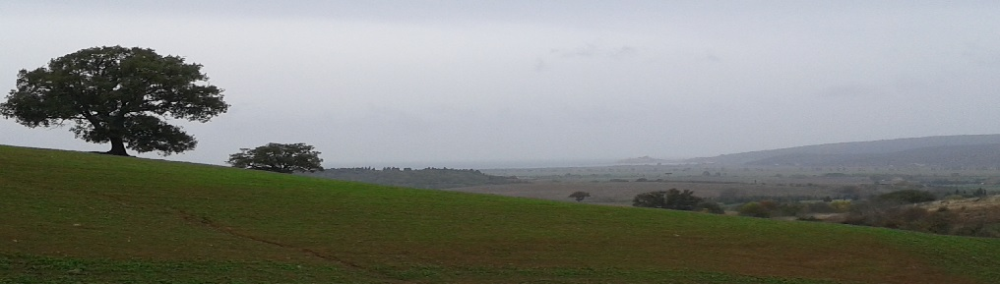
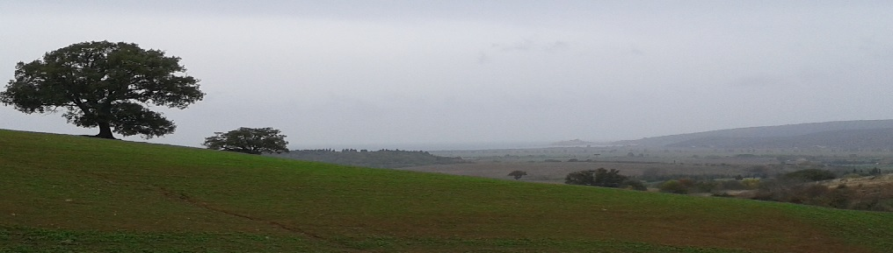

Informativa ex art 13 D. Lgs. 196 del 2003 per il trattamento di dati sensibili
Gentile Signore/a,
ai sensi del D.Lgs. 196/2003, sulla tutela delle persone e di altri soggetti rispetto al trattamento dei dati personali, il trattamento delle informazioni che La riguardano, sarà improntato ai principi di correttezza, liceità e trasparenza e tutelando la Sua riservatezza e i Suoi diritti.
In particolare, i dati idonei a rivelare l’origine razziale ed etnica, le convinzioni religiose, filosofiche o di altro genere, le opinioni politiche, l’adesione a partiti, sindacati, associazioni od organizzazioni a carattere religioso, filosofico, politico o sindacale, nonché i dati personali idonei a rivelare lo stato di salute e la vita sessuale, possono essere oggetto di trattamento solo con il consenso scritto dell’interessato e previa autorizzazione del Garante per la protezione dei dati personali (articolo 26).
Ai sensi dell’articolo 13 del predetto decreto, Le forniamo quindi le seguenti informazioni.
- I dati sensibili da Lei forniti verranno trattati, nei limiti dell’Autorizzazione generale del Garante n° 7/2014, per le seguenti finalità: NO PROFIT;
- Il trattamento sarà effettuato con le seguenti modalità:informatizzato.;
- Il conferimento dei dati è facoltativo e l’eventuale rifiuto a fornire tali dati non ha alcuna conseguenza.
- I dati non saranno comunicati ad altri soggetti né saranno oggetto di diffusione.
- Il titolare del trattamento è
Stefano Durante Via T. Arcidiacono 55 Roma.
- Il responsabile del trattamento è
Stefano Durante
- In ogni momento potrà esercitare i Suoi diritti nei confronti del titolare del trattamento, ai sensi dell’articolo 7 del D.lgs.196/2003